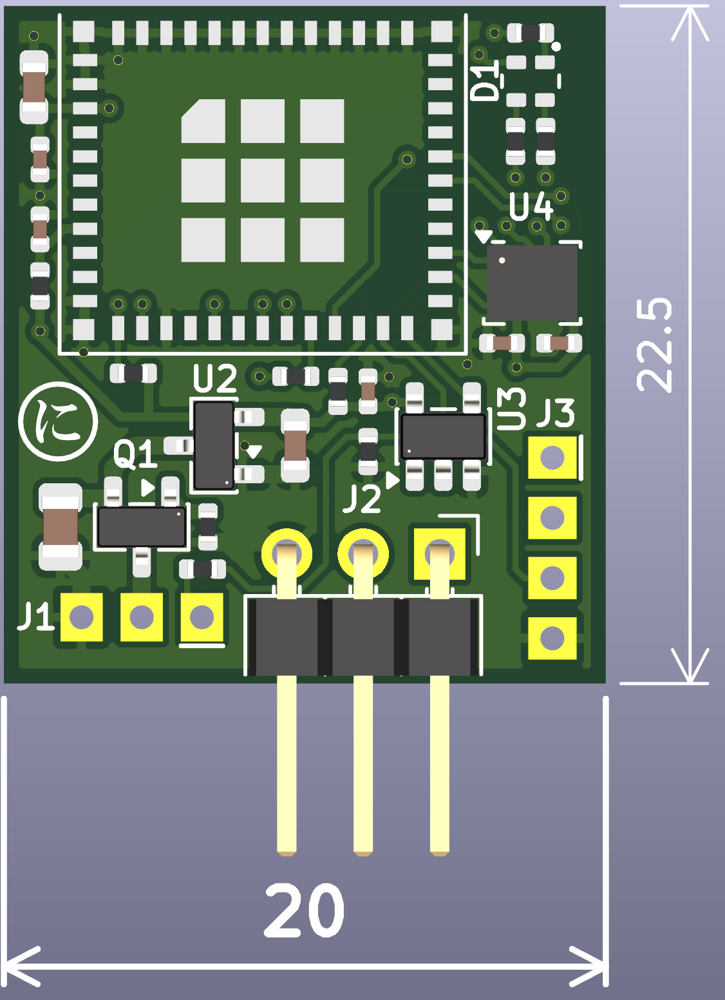
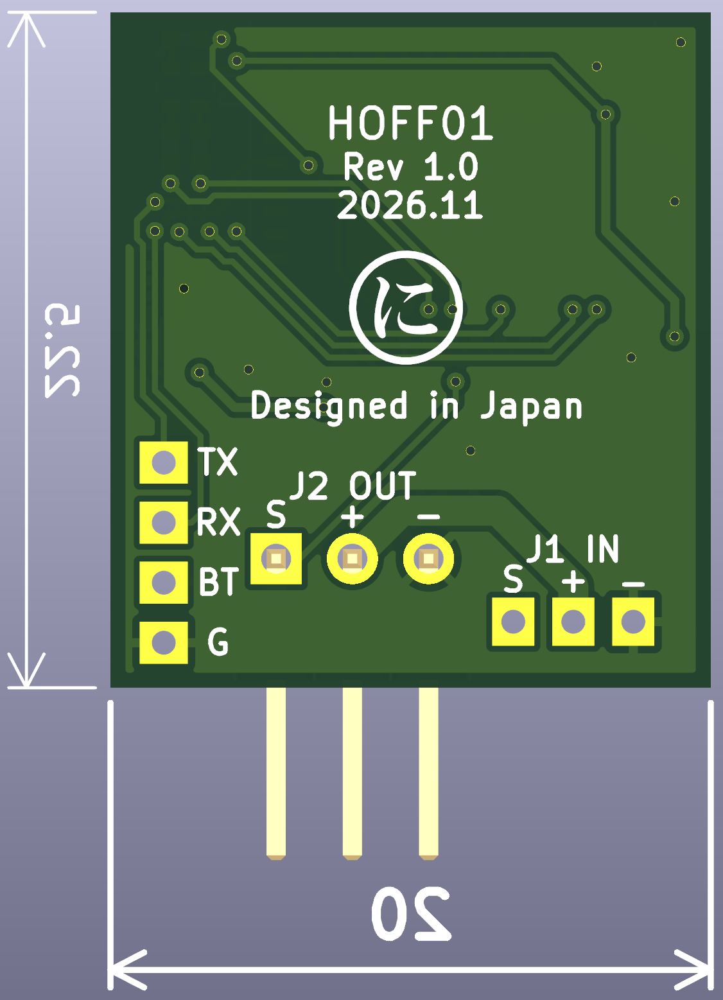

HOFF01HangOff 専用基板
RC バイクのライダーを、ボードの傾きに合わせてサーボで「ハングオフ」させる HangOff。 これまでは市販のマイコンボード（XIAO nRF52840 Sense）に線をつないで作っていましたが、 必要なものを 1 枚にまとめた専用基板 HOFF01 を設計しました。 大きさは 20 × 22.5 mm。受信機のサーボ線を 1 本つなぐだけで動きます。


なぜ専用基板にしたのか
マイコンボードを使った版は、配線が多く、ライダーの中に収めるのが大変でした。 受信機の信号が 5V の場合に備えた部品や、電源の逆差し対策も外付けになります。
HOFF01 は、マイコン・センサー・電源・信号の変換をすべて 1 枚に載せました。 受信機からのサーボ線を基板に付け、サーボを基板のピンヘッダに挿せば、間に入るだけで動きます。
しくみ
- 傾きを測る: 6 軸センサー（LSM6DS3TR-C）がボードの傾きを測ります。
- サーボを動かす: マイコンが傾きに合わせてサーボの角度を決め、ライダーを傾けます。
- 受信機で調整: 受信機の空きチャンネルの信号で、傾ける量を走りながら変えられます。
- スマホで設定: マイコンは Bluetooth LE 対応の ESP32-H2。スマホのブラウザから設定を変えられます。
- 状態がわかる: 3 色 LED で、動作の状態を知らせます。
つなぎ方
| 端子 | 役目 | 並び | 形 |
|---|---|---|---|
| J1 IN | 受信機から（電源と信号） | S / + / − | 線を直接はんだ付けする穴 (2 mm 間隔) |
| J2 OUT | サーボへ | S / + / − | L 字のピンヘッダ (2.54 mm) |
| J3 | プログラムの書き込み | TX / RX / BT / G | 線用の穴 (2 mm 間隔) |
電源は受信機（BEC）から取ります（最大 8.4 V）。サーボの電源は受信機からそのまま通るので、基板の中の回路を通りません。
主な部品
| 部品 | 型番 | 役目 |
|---|---|---|
| マイコン | ESP32-H2-MINI-1 | Bluetooth LE 5.3、アンテナ内蔵のモジュール |
| センサー | LSM6DS3TR-C | 6 軸（ジャイロ + 加速度） |
| 電源 | ME6209A33M3G | 3.3V を作るレギュレーター |
| 逆差し保護 | AO3401A | 電源を逆につないだとき回路を切り離す |
| 信号の変換 | 74LVC1G17 | 受信機の 5V の信号を 3.3V に |
| LED | XL-1615RGBC-RF | 1.6 × 1.5 mm の 3 色 LED |
部品はすべて表面。2 層の基板で、両面を GND で覆っています。
プログラムの書き込み
USB は載せず、別に作る USB 変換基板を J3 につないで書き込みます。
- J3 の BT と G をつないだまま、電源を入れる（書き込みの待ち受けになる）
- BT と G を外し、TX / RX / G を USB 変換基板につないで書き込む
- 電源を入れ直すと、新しいプログラムで動き出す
いまの状態
2026 年 11 月に設計が終わり、試作基板を作るところです。 HOFF01 用のプログラムは、これから今の HangOff から移します。 動いたら、このページで続きを報告します。
設定アプリ（HangOff）は、今はマイコンボード（XIAO nRF52840 Sense）の版に対応しています。